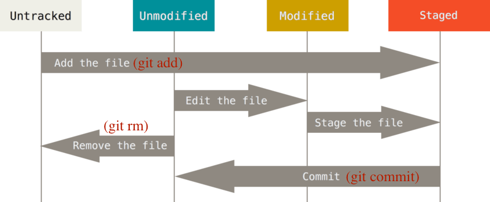

Git is a free and open source distributed version control system designed to handle everything from small to very large projects with speed and efficiency.
Basic Command
I’ll list the most common command down below.
You can find more information at git cheat sheet
1 | $ git status # Show the working tree status |
Here is an example to learn how to use these command.

Picture from: https://git-scm.com
Git status
Add a file at your repo , in this toturial I create git-test.py at my repo.
This will list all new or modified files to be commited, you can know which file you change or not be tracked.
1 | $ git status |
Git add
Then add the file you want to track.
1 | $ git add git-test.py |
Git diff
See the difference between original status and the current status.
1 | $ git diff |
press Q if you want to quit the diff listing.
Git commit
All file are prepared, then you have to commit this change to the repo.
1 | $ git commit -m "<Commit Message>" |
Git log
Check your commitment.
1 | $ git log |
Git reset
Reset current HEAD to the specified state.
the argument HEAD can change to HEAD^ or HEAD~<num>
1 | $ git reset HEAD^ # reset HEAD to previous version |
Try it!!
I think the fastest way to learn git is to try it your self !
Let’s go to the other git tutorial:
Next - Git Branching
Prev - Start with Git